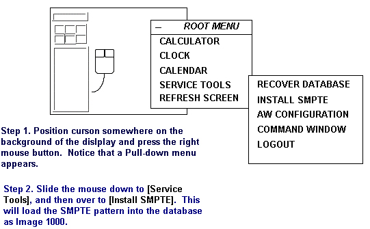
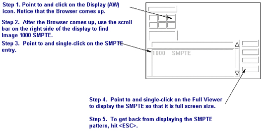
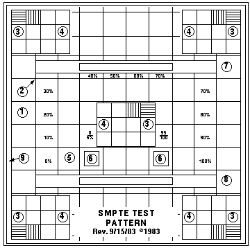

Operating Documentation
Direction 5133330-3, Rev# 14
Signa EXCITE HD 3.0T Service Methods
Module Version 1.0, Version Date 5/3/07
Operating Documentation |
| Required Persons | Preliminary Reqs | Procedure | Finalization |
|---|---|---|---|
| 1 |
The SMPTE (Society of Motion Picture and Television Engineers) test pattern is used to provide a standard image for adjusting the monitor. Use this when first adjusting the monitor to achieve the best possible video display. This test pattern is available on the Operator Workstation Host Computer after the operating system, has booted, and after you have logged into the system.
Confirm that all the components in the Operators Workspace (OW), the host LCD monitor, PC LCD panel, and both the host computer and PC have power.
After IRIX has booted login at the login screen as signa using the password adw2.0. Press <Enter>.
After the host computer is at the applications level, install and display the SMPTE pattern. See Illustration 1 for installing and Illustration 2 for displaying SMPTE pattern. See Illustration 3 for sample test pattern.
Illustration 1: INSTALLING THE SMPTE PATTERN

Illustration 2: DISPLAYING THE SMPTE PATTERN

Illustration 3: SAMPLE SMPTE TEST PATTERN

With the cursor inside the displayed image, hold down the middle mouse button and move the mouse in the horizontal plane. View the “window control” value at the base of the image and set the “window control” value to 100.
With the cursor inside the displayed image, hold down the middle mouse button and move the mouse in the vertical plane. View the “level control” value at the base of the image and set “level control” value to 1024.
No finalization steps.